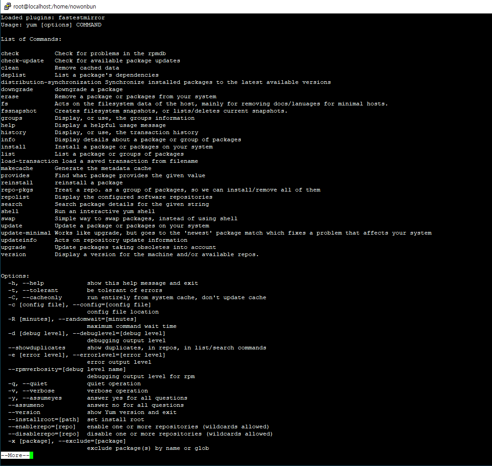
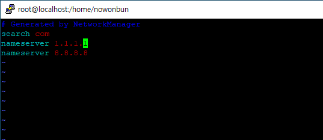
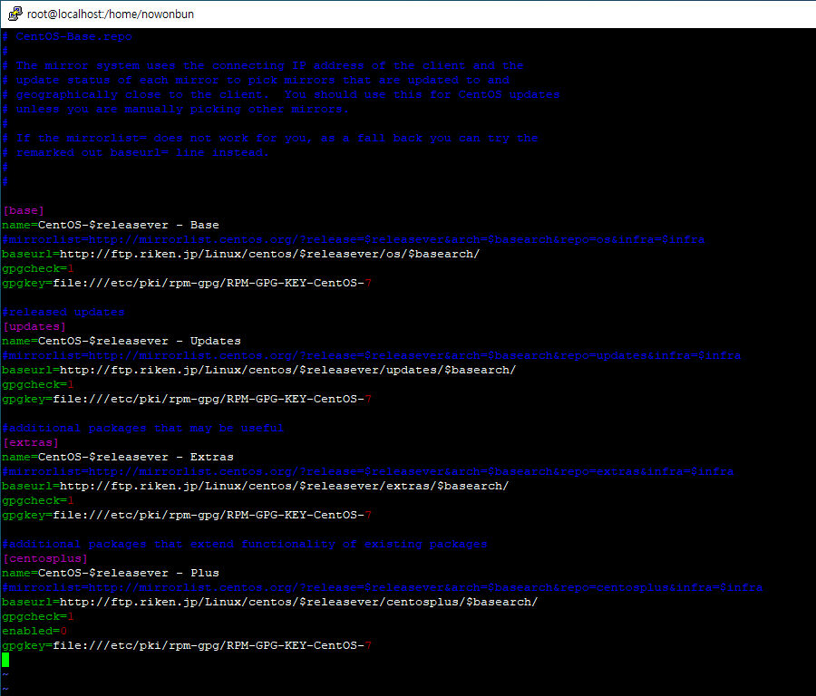

[CentOS] YUMについて、YUMが出来ない場合処理方法
こんにちは。明月です。
我々がよく使うウィンドウ環境はインストールパッケージファイルをダウンロードしてダブルクリックでインストールができます。
でも、Linuxの場合はそんな簡単ではないです。サーバ起動する時に登録しなければならないし、パッケージ管理、依存性管理もしなければならないです。
それを一々で手動でするとすごく面倒になりますね。
それを管理するプログラムがありますが、それが「YUM」です。
「YUM」とは「Yellowdog Updater Modified」の略語で「rpm基盤のシステムのため、自動アップデータ、パッケージ管理ツール」です。また「YUM」は自動に依存性を処理してくれるし、rpmパッケージを安全にインストール、削除及びアップデートのため、必ずしなければならないものを自ら処理します。
簡単に説明するとスマートフォンなどであるAPPストアと似てます。パッケージは全て無料ですね。昔、スマートフォンがある前には不慣れな概念でしたが。。
纏めて、「YUM」は簡単で使用可能し、接近性もよいパッケージ管理ツールです。
「yum」に関して使用方法はコマンドで「yum help」で詳しく確認できます。

| コマンド | 説明 |
|---|---|
| yum check-update | 現在、インストールされたプログラムでアップデータしたことをチェックします。 |
| yum clean all | キャッシュされたリストをクリアする。 |
| yum deplist | yumパッケージによる依存性テスト。 |
| yum downgrade パッケージ | yumをとおってパッケージをダウングレードする。 |
| yum erase パッケージ | yumをとおってシステムで削除する。 |
| yum groupinfo グループ | グループパッケージの情報を表示。 |
| yum groupinstall グループ | グループパケージをインストールする。 |
| yum grouplist グループ | グループリストに関する情報を確認する。 |
| yum groupremove グループ | グループリストに関して削除する。 |
| yum help | yumの使用方法を確認する。 |
| yum info グループまたはパッケージ | パッケージまたはグループのパッケージを詳しく確認する。 |
| yum install パッケージ | システムでパッケージのInstallを実施する。 |
| yum list | サーバにあるグループ及びパッケージのリスト |
| yum localinstall パッケージ | ローカルでインストールをします。 |
| yum makecache | キャッシュを再作成する。 |
| yum provides ファイルパス名 | ファイルで提供するパッケージ情報 |
| yum reinstall パッケージ | パッケージを再インストールする。 |
| yum update パッケージ | パッケージをアップデータする。(yumのバージョン情報など) |
| yum upgrade パッケージ | パッケージをアップグレードする。(実際に当該プログラムを更新する。) |
CentOSを初めにインストールする時にYUMが動作しない時
基本的に設定されているYUMの接続URLが間違っていることもあるし、様々な理由でできない時があります。
その時に参照すればよいセット方法です。
「/etc/resolv.conf」でDNSサーバ設定をしましょう。
search com
nameserver 1.1.1.1
nameserver 8.8.8.8

上のサーバアドレスは上は「cloudflare」で下は「google」dnsサーバです。速度及び安全性が一番いいものではないかと思います。
それに変更してYUMの動作確認しましょう。
それでも出来なかった場合にはレポジトリを修正しましょう。
基本的にCentOSで提供するレポジトリで接続ができなければ、日本では「riken.jp」で提供するcentosレポジトリを使ったら良いです。
基本Centosのレポジトリは外海だからかな、たまに遅くなり、接続が失敗する時あります。国内のレポジトリを使うとその可能性が低いので良いと思います。
レポジトリを修正するためにはvim編集ツールで「/etc/yum.repos.d/CentOS-Base.repo」を修正すると良いです。
レポジトリ中で「baseurl」のurlアドレスが「mirrorlist.centos.org」を 「ftp.riken.jp/linux」に修正しましょう。

設定した後でまた「yum」をテストしてそれでもエラーがなると再起動することでできます。
- [Ubuntu] PHPをインストール、Composer設定する方法2019/11/13 07:32:21
- [Ubuntu] テーマ(Arc)を変更する方法(tweak)2019/11/12 07:32:13
- [Ubuntu] Apache2をインストールする方法2019/11/11 07:28:28
- [Ubuntu] 「acquire the dpkg frontend lock」のエラーを解決方法2019/11/10 22:19:34
- [Ubuntu] JavaインストールとEclipseをインストールする方法2019/11/08 07:29:55
- [Ubuntu] MariaDB(Mysql)をインストールする方法2019/11/07 07:50:58
- [Ubuntu] Chromeをインストールする方法2019/11/06 19:48:19
- [CentOS] YUMについて、YUMが出来ない場合処理方法2019/11/05 07:17:58
- [CentOS] MariaDB(Mysql)をインストール2019/11/04 18:35:10
- [CentOS] FTPインストールする方法(vsftpd)2019/11/01 07:29:57
- [CentOS] SAMBAインストール方法2019/10/30 07:38:57
- [CentOS] PHPインストールする方法2019/10/29 20:09:03
- [CentOS] ApacheとTomcatの連携2019/10/29 07:28:33
- [CentOS] Tomcat インストール方法2019/10/28 22:38:56
- [CentOS] Java インストール2019/10/28 00:22:32
- [CSS] Columnスタイル2019/12/17 19:52:56
- [CSS] 整列スタイル (float)2019/12/17 00:08:54
- [CSS] 位置(position),表示(display)スタイル2019/12/13 20:08:50
- [CSS] border(枠)、余白スタイル - border, margin, padding2019/12/12 20:16:43
- [CSS] 文字スタイル2019/12/11 21:13:22
- [CSS] その他の疑似選択子 - link, visited, target, enabled, disabled, not, active, hover, focus2019/12/10 07:31:28
- [CSS] 疑似要素選択子 - fist-line, first-letter, before, after2019/12/09 07:28:27
- [CSS] 属性選択子2019/12/06 07:27:36
- [CSS] 疑似クラス - only-child, only-of-type, empty, empty, root2019/12/05 07:29:15
- [CSS] 疑似クラス - first-child, last-child, first-of-type, last-of-type2019/12/04 07:28:37
- [CSS] 疑似クラス - nth-child, nth-of-type, nth-last-child, nth-last-of-type2019/12/03 07:21:20
- [CSS] 属性選択子2019/12/02 07:32:37
- [C#] Selector(選択子)2019/11/28 07:28:03
- [CSS] CSS Stylesとは？2019/11/27 07:30:30
- [HTML] Open graph(ogタグ)2019/11/26 07:42:20